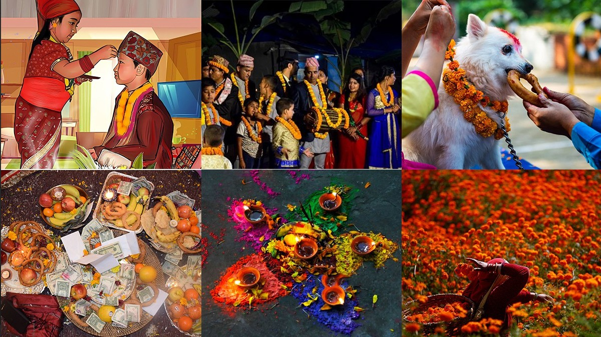

Overview
Nepal has a rich cultural heritage influenced by Hinduism and Buddhism. Festivals, dances, music, and traditional art play an important role in the daily life of Nepali people.
Major Festivals
- Dashain
- Tihar
- Holi
- Buddha Jayanti
Traditions & Arts
- Traditional handicrafts and Thangka paintings
- Folk music and dances like Maruni, Deuda
- Architecture: Temples, stupas, and palaces
Images
